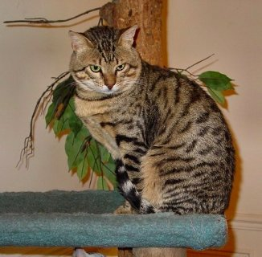
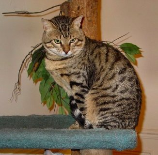

Egyptská mau je přírodní plemeno kočky domácí původem z Egypta. FIFe egyptskou mau řadí do skupiny III, mezi krátkosrsté a somálské kočky.
Egyptská mau je středně velká kočka. Tělo je dobře osvalené, kočka působí aktivním dojmem
Hlava je klínovitá, střední délky, mírně zaoblená, bez rovných ploch. Tváře nejsou plné. Nos je při pohledu zepředu po celé délce stejně široký. Čenich není ani krátký, ani špičatý. Uši jsou větší, široké u základny, vztyčené a mírně zašpičatělé. Mají od sebe přiměřený rozestup, opticky prodlužují plochu hlavy. Chlupy na uších jsou krátké a přiléhající. Chomáčky delších chlupů na špičce ucha (jako u rysa) jsou přípustné. Oči jsou velké, ve tvaru mandlí, ani kulaté ani orientálního typu, lehce sešikmené směrem k uším. Barva očí je světle zelená („angreštová“). Jantarová barva je přípustná pouze u mladých zvířat do stáří 1,5 roku.
 
